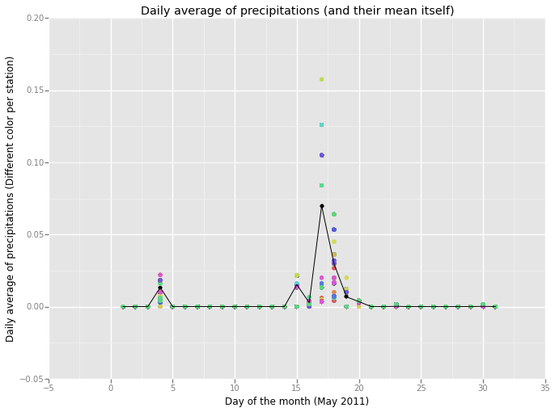

Analyzing the NYC Subway Dataset
Section 0. References
Section 1. Statistical Test
1.1 Which statistical test did you use to analyze the NYC subway data? Did you use a one-tail or a two-tail P value? What is the null hypothesis? What is your p-critical value?
I have used a directional (one-tailed) Mann-Whitney U test with a significance level of 0.01. The null hypothesis is that there is no difference between ridership for rainy and non-rainy days, or if exists a difference, non-rainy days will have fewer riderships.
So the alternative hypothesis will be that when it is raining more people will take the subway.
1.2 Why is this statistical test applicable to the dataset? In particular, consider the assumptions that the test is making about the distribution of ridership in the two samples.
This test does not assume any kind of characteristics about the distribution, so is a non-parametric test, which is very useful to us regarding that our data does not follow a normal distribution.
1.3 What results did you get from this statistical test? These should include the following numerical values: p-values, as well as the means for each of the two samples under test.
After conducting the test I get a p-value = 2.74e-6. The samples we are testing have the following means:
- Rain: 2028.20 entries between readings on average
- No-Rain: 1845.54 entries entries between readings on average
1.4 What is the significance and interpretation of these results?
Regarding this results, we would conclude that significantly more people ride the subway when it is raining than when it is not raining: we would reject the null hypothesis with a significance level of 2.74e-6 (for a one-tailed test).
Section 2. Linear Regression
2.1 What approach did you use to compute the coefficients theta and produce prediction for ENTRIESn_hourly in your regression model:
- OLS using Statsmodels or Scikit Learn
- Gradient descent using Scikit Learn
- Or something different?
I have used primarily OLS using Statsmodels, but I have made also some tests with the Gradient Descent algorithm that I implemented during the course.
The reason for using primarily the OLS algorithm instead of Gradient Descent is that it gives the minimum of the cost function. The Gradient Descent could be advantageous in situations that we have a ver huge amount of data to process, because it will be faster [1].
2.2 What features (input variables) did you use in your model? Did you use any dummy variables as part of your features?
I have used the following variables as linear terms for the regression model: hour, day_week, weekday, fog, precipi, pressurei, rain, tempi and wspdi. I have also added some other high-grade terms to the regression model (from order 2 up to order 10 depending on the specific characteristic and the results that it provides in the final model). This high-order terms include the variables: hour, precipi, DAYn, day_week, pressurei, tempi and wspdi (where DAYn is the day of the month).
I have aso included some dummy variables, separating data points with different values of UNIT and conds.
2.3 Why did you select these features in your model? We are looking for specific reasons that lead you to believe that the selected features will contribute to the predictive power of your model.
- Your reasons might be based on intuition. For example, response for fog might be: “I decided to use fog because I thought that when it is very foggy outside people might decide to use the subway more often.”
- Your reasons might also be based on data exploration and experimentation, for example: “I used feature X because as soon as I included it in my model, it drastically improved my R2 value.”
In a first approach I selected those variables that intuitively have a direct relation with the number of people that ride the subways, such as the weather variables (the worst the weather, the more people will ride the subway) and other time constraints variables (there has to be peak hours and there could be a difference between weekday and non-weekday days).
Based on this intuition I have made an analysis of the influence of the different variables on a regression model and its Coefficient of Determination. I have made also an individual analysis of the influence of the different variables to the ENTRIESn_hourly variable, creating different visualizations like a scatter plot, a regression line, a LOESS curve and also plotting the evolution of the mean and median values of ENTRIESn_hourly for different other variables. After this individual analysis I got a more specific vision about how each variable influences the number of entries, so that it could be advantageous adding dummy variables or high-order terms in the regression model (for variables that clearly does not follow a linear curve).
In the case of the dummy variables, there is a high difference between the passengers for different stations, which produces a high dispersion in the scatter plot if we do not desegregate this data for different stations (or units). The reason to add another dummy variable for conds is based on the analysis of the R2 value obtained (which is better with the variable that without it).
2.4 What are the coefficients (or weights) of the non-dummy features in your linear regression model?
For the OLS regression model:
y-intercept:
[91.81604036]['hour', 'day_week', 'weekday', 'fog', 'precipi', 'pressurei', 'rain', 'tempi', 'wspdi']:[251.60958223, 54.26412209, 5.15990429, -844.41927264, -4433.78226047, 19.50560816, -47.41895306, 7.79552114, -381.63655189]For high-level coefficients:
- From
hour^2 tohour^7:[-5.13371030e+01, -8.48858638e+01, 2.43511841e+01, -2.44115321e+00, 1.05644031e-01, -1.67913677e-03] - From
precipi^2 toprecipi^7:[-1.07601557e+03, -2.49645994e+02, -7.65339325e+01, 6.63667953e+00, 1.53174242e+01, 8.63876977e+00] - From
DAYn^2 toDAYn^9:[-5.10069717e+01, 1.14121069e+01, -1.84865398e+00, 2.37053963e-01, -1.86161864e-02, 8.07465475e-04, -1.78341838e-05, 1.56831062e-07] - From
day_week^2 today_week^9:[4.98824513e+01, 1.68135796e+01, -1.22910788e+01, -1.62929551e+01, 9.61846145e+00, -1.40679451e+00, -2.82037026e-02, 1.27466191e-02] - From
pressurei^2 topressurei^6:[1.42505748e+02, -7.28049102e+01, -3.63362764e-01, 2.44293778e-01, -5.23382498e-03] - From
tempi^2 totempi^5:[2.81001114e+01, -8.32763244e-01, 9.18182005e-03, -3.59854775e-05] - From
wspdi^2 towspdi^8:[2.57483634e+02, -7.23596531e+01, 1.12261615e+01, -1.02458131e+00, 5.42489061e-02, -1.52988140e-03, 1.76633365e-05]
- From
2.5 What is your model’s R2 (coefficients of determination) value?
The Coefficient of Determination obtained with this regression model is 0.50282237824483411.
2.6 What does this R2 value mean for the goodness of fit for your regression model? Do you think this linear model to predict ridership is appropriate for this dataset, given this R2 value?
This R2 values says that 50,28 % of variability of the ENTRIESn_hourly parameter could be determined with the different variables that I have used in the regression model.
To give a response about the viability of using this model for predicting the ridership I will use a visualization of the ENTRIESn_hourly variable and the predicted one. I have used a scatter plot with the OLS result in blue and another with the Gradient Descent result in red. I have also added a LOESS curve and a LS curve (with a lighter color). There is a black line with the reference 1:1 line that the data should follow.

So given the R2 parameters we could say that is a good estimation, whereas if we take a look to the above curve, the predictions are not very close to the reference line for higher values of ENTRIESn_hourly, the regression model has made a good adjustment for lower values (where most of them are concentrated as well).
Section 3. Visualization
Please include two visualizations that show the relationships between two or more variables in the NYC subway data.
Remember to add appropriate titles and axes labels to your plots. Also, please add a short description below each figure commenting on the key insights depicted in the figure.
3.1 One visualization should contain two histograms: one of ENTRIESn_hourly for rainy days and one of ENTRIESn_hourly for non-rainy days.

NOTE: With the current version of ggplot that it was impossible to get the legend for the above figure, however, as we have seen before, the curve corresponding to the higher values (the blue one) has to reference to the rainy days, whereas the red curve reference to the non-rainy days. I also tried to plot a histogram instead of the density function but again the ggplot version used was not able to create it. Nevertheless, this visualization offers almost the same information about the distribution, and is even more clear that both distributions are different (for rainy days the curve is displaced to the right, which means that has more entries). Note also that I have truncated the plotted values up to 10.000 entries to make the visualization easier to interpret.
3.2 One visualization can be more freeform. You should feel free to implement something that we discussed in class (e.g., scatter plots, line plots) or attempt to implement something more advanced if you'd like. Some suggestions are:
- Ridership by time-of-day
- Ridership by day-of-week
The implemented check_relation function that I have mentioned before also allows to visualize different characteristics like a scatter plot of the entries (cyan), a evolution of the mean (red) and the median (blue) of these values, a LOESS curve and a LS curve (yellow). I have also added a LOESS curve and a LS curve calculated excluding the outliers of the entries trying to compare how those values affects the different curves (black). As the tittle of the figure I also added the R2 value calculated for the specified parameter.
If a call this function with the day_week parameter, I get the following figure:

In the above image we can observe different characteristics of the ridership. First of all, the high dispersion of the data and its high number of outliers says that maybe different stations have a very different average passengers (the intuition also says the same). Regarding this aspect, elimination the outliers and constructing a new “shape” curve gives values closer to the median curve (we only have to take a look to the mean curve to notice the power of the outliers here).
Apart from that, we can see the evolution for different days, with a lower ridership for the weekends. Notice again that these are generalized values for all the stations, so it could be possible for some stations to have more ridership on weekends (because is next to a park or a cinema or similar where people could go on weekend).
Note that the y-axis has been truncated up to 5.000 entries.
Section 4. Conclusion
Please address the following questions in detail. Your answers should be 1-2 paragraphs long.
4.1 From your analysis and interpretation of the data, do more people ride the NYC subway when it is raining or when it is not raining?
Given the parameters for the two populations (rainy and non-rainy days), we conduct the Mann-Whitney U test and we get a p-value = 2.74e-6, which is clearly lower than the critical value, so we would reject the null hypothesis. That means that significantly more people ride the subway in New York City when it is raining than when it is not raining (in other words, it is not likely due to chance to get this difference between the two data if they were not different).
We can also see that difference if we visualize the ridership for both situations, rainy and non-rainy days, not only through the density function but also through almost any visualization where we split the data for both situations.
4.2 What analyses lead you to this conclusion? You should use results from both your statistical tests and your linear regression to support your analysis.
Regarding the resulting p-value given by the Mann-Whitney U test, we would conclude that significantly more people take the subway when it is raining than when it is not raining. Moreover, the analysis of the ENTRIESn_hourly variable shows that in every situation we split the data for both populations, the curve for rainy-days shows a higher ridership.
Additionally to the statistical test, we can see in the regression model built that there is a big influence of the weather conditions on the quantity of people that take the subways. However, the huge difference between the quantity of ridership depends on the stations we are analyzing, so it could be interesting to create a regression model for each individual station in order to reduce the variability in the entries per reading variable.
Section 5. Reflection
Please address the following questions in detail. Your answers should be 1-2 paragraphs long.
5.1 Please discuss potential shortcomings of the methods of your analysis, including:
- Dataset,
- Analysis, such as the linear regression model or statistical test.
For the conduction of this analysis I have used the improved data set provided by Udacity. In this dataset, the first thing we should notice is that the main variable we are analyzing, ENTRIESn_hourly is not a measure of the entries per hour, instead it measures the number of entries between readings. That gap of time could be 4, 8, 12, 16 or even 20 hours. However, the majority of measures have been made with a gap of time of 4 hours (96%), then with a gap of 8 hours (3,7%) and so on.
However, I have create an additional variable measuring the entries per hour, but due to the fact that most of the measures have almost the same gap between measures, the result is approximately the same than using the initial ENTRIESn_hourly variable.
The main shortcoming in the analysis and also in creating the regression model is the high difference between riderships for different stations. This difference could be appreciated in the scatter plot of the entries per reading where we have a high number of dispersion and also a huge amount of outliers. Regarding this situation, I have created a new visualization to better understand the behavior of this characteristic:

In the above figure we can see the mean (red) and median (blue) values for the different stations. As we can see, this huge difference between stations will create a regression model with the aggregated data that may not be as precise and accurate as it could be if we split the data for the different stations and create a model for each one of them. This difference between stations produce a regression model that adjust for lower values of entries, but is very inefficient for higher values as we have seen in the figure on 2.6.
Other shortcoming that we could take into account is that in this dataset we only have data for one month, May 2011. In this month we have only a few rainy days, and also the amount of precipitations differs a lot between these days and also between stations. So here again, it could be very advantageous to split the data analysis for each station individually. In the following visualization we can see the difference between different stations for the mean precipitations for each day of the month.

In this image I have represented a line for the mean value for the different stations (black). We can also see in different colors the daily average of precipitations meanprecipi for the different stations. Whereas in some days that difference is not so big, other days we have a much higher difference. In this case I have selected the amount of precipitations because we are trying to analyze the effect of the rain (mainly), however other weather variables could also have a high dispersion for different stations.
5.2 (Optional) Do you have any other insight about the dataset that you would like to share with us?
Just to support my theory of the station-splitting-analysis in someway, I have analyzed different stations and created a regression model for each of them individually. The result could be viewed in the following image:

In this case I have chosen the 4 stations with higher mean entries (for making the comparison easier). I have also included the Coefficient of Determination in the tittle of each of them. The presented curves correspond to the desired value (black), the LOESS curve (red) and the LS curve (pink) with the 95% confidence interval. In this case the regression model created is much more accurate than before, reaching a R2 value of 0.8948 for the 59 ST-COLUMBUS station, which means that the 89,48% of the variability in the entries for this station could be explained by external variables like the weather and the time.
In this case we have to take care because splitting the data also means that we will have less samples for each group, so there could be a case in which we do not have enough information to build a regression model (or the model would be wrong, for example if for one station we do not have data for rainy days).